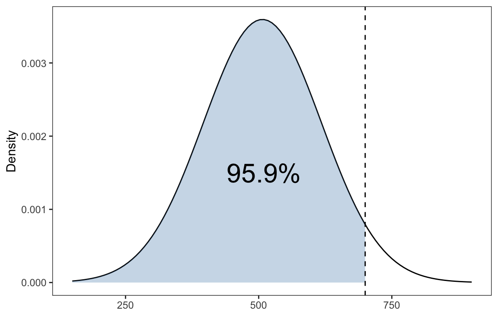
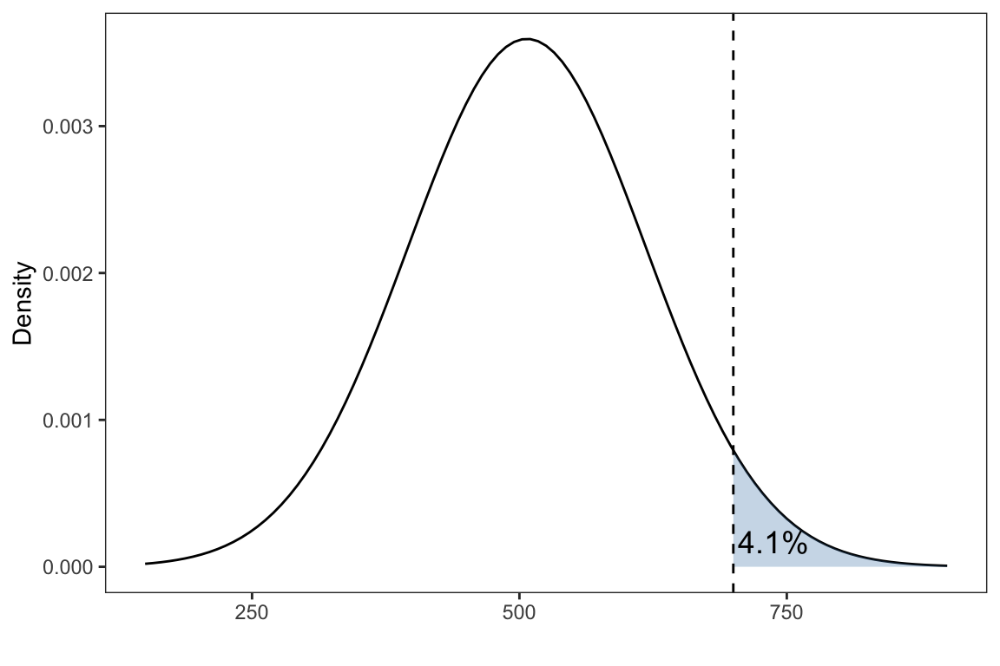
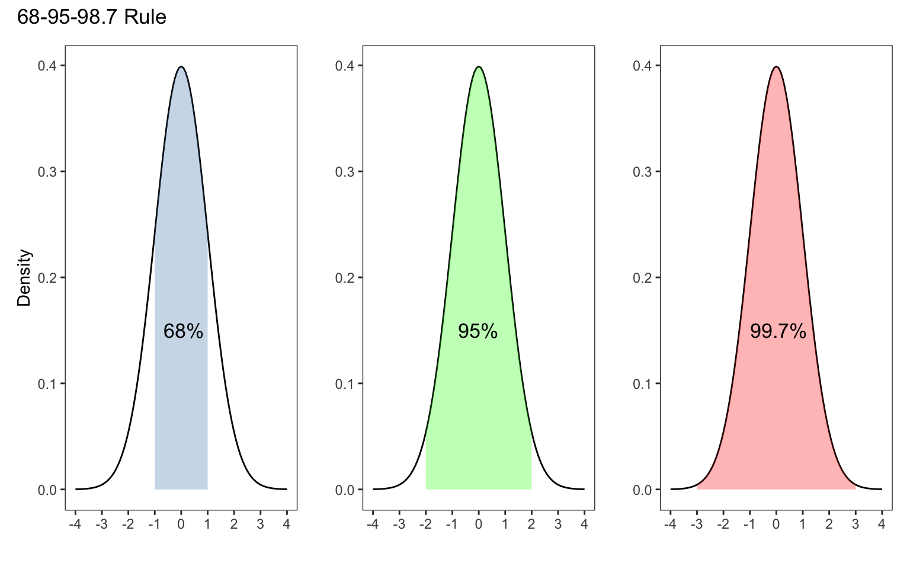
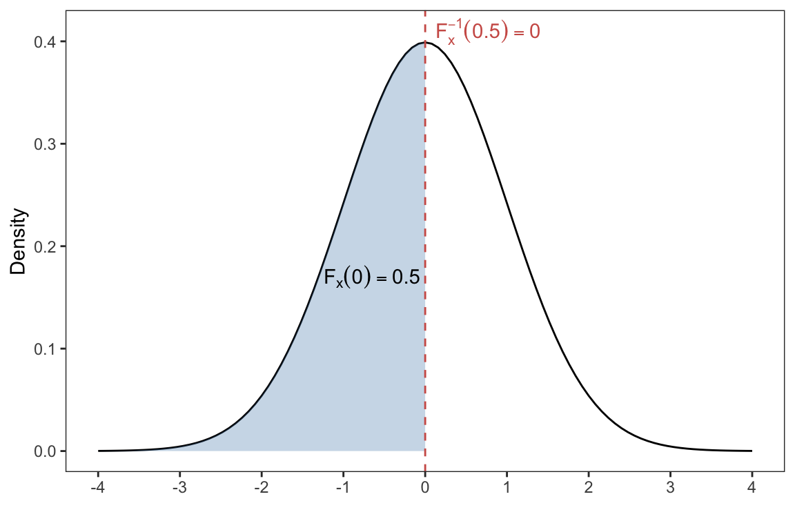
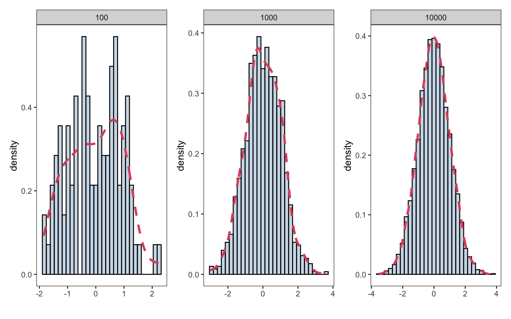

Normal Distribution
The following packages were used for this tutorial but are not required for your lab
Show Code
theme_set(theme_bw())
theme_replace(panel.grid.minor = element_blank(),
panel.grid.major = element_blank())Normal Distribution
One of the most important and widely used continuous distribution is the Normal distribution, or Gaussian distribution.
Let \(X \sim N(\mu,\sigma)\) be a random variable following a normal distribution with mean \(\mu\) and standard deviation \(\sigma\). In R, the following functions described in the table below, allows us to summarize the function relating to the normal distribution
| Function | Description |
|---|---|
| dnorm | Normal density (Probability Density Function) |
| pnorm | Normal distribution (Cumulative Distribution Function) |
| qnorm | Quantile function of the Normal distribution |
| rnorm | Normal random number generation |
By default, all of the functions above consider the standard Normal distribution, which has a mean of zero and a standard deviation of one, \(X \sim N(0,1)\)
dnorm
The density function for a normal distribution with mean \(\mu\) and standard deviation \(\sigma\) is
\[ f(x) = \frac{1}{\sigma \sqrt{2\pi}} \exp{\left( -\frac{1}{2\sigma^2 }(x-\mu)^2 \right)} \] for \(-\infty < x < \infty\)
We can use dnorm() function to calculate the density function, i.e \(f(x)\), for a grid of \(x\) values from any normal distribution with mean \(\mu\) and standard deviation \(\sigma\)
For example, we can calculate \(f(0)\) from a standard normal distribution
dnorm(x = 0,mean = 0,sd = 1)#> [1] 0.3989423Consider evaluating \(f(x)\) for \(x \in [1,10]\) with mean 1 and standard deviation of 3
dnorm(x=1:10, mean = 1, sd =3 )#> [1] 0.132980760 0.125794409 0.106482669 0.080656908 0.054670025 0.033159046
#> [7] 0.017996989 0.008740630 0.003798662 0.001477283pnorm
The pnorm() function gives the Cumulative Distribution Function (CDF) of the Normal distribution, which is the probability that the variable \(X\) takes a value less than or equal to \(x\). Mathematically, \(F_X(x) = P(X \leq x)\).
For any continuous distribution \(P(X = x)=0\), so equivalently the CDF is \(P(X \leq x) = P(X < x)\).
Consider the standard normal distribution, since this distribution is symmetrical centered around \(\mu=0\) then \(P(X \leq 0) = 0.5\). We can verify this result using pnorm as follows
pnorm(0,mean = 0, sd = 1)#> [1] 0.5Example: Suppose \(X\) is the SAT-M score which has a normal distribution with a mean of 507 and standard deviation of 111. What is the probability of scoring less than 700 on the SAT-M?
Show Code
prob1 <- round(pnorm(700, mean=507, sd=111) * 100,2)
p1 <- ggplot(data.frame(x = c(150,900)), aes(x)) +
stat_function(fun = dnorm,
geom = "line",
xlim = c(150,900),
args = list(
mean = 507,
sd = 111
)) +
stat_function(fun = dnorm,
geom = "area",
fill = 'steelblue',
alpha =0.3,
xlim = c(150, 700),
args = list(
mean = 507,
sd = 111
))+
annotate("text", x = 510, y = 0.0015,
label = paste0(prob1,'%'),
size = 8)+
geom_vline(xintercept = 700,linetype =2)+
labs(x = '',y= 'Density')
That is \(P(X < 700)\),
pnorm(700, mean=507, sd=111)#> [1] 0.9589596What about the probability of scoring greater than 700?
Show Code
prob2 <- round(pnorm(700, mean=507, sd=111,
lower.tail = FALSE)*100,2)
p2 <- ggplot(data.frame(x = c(150,900)), aes(x)) +
stat_function(fun = dnorm,
geom = "line",
xlim = c(150,900),
args = list(
mean = 507,
sd = 111
)) +
stat_function(fun = dnorm,
geom = "area",
fill = 'steelblue',
alpha =0.3,
xlim = c(700, 900),
args = list(
mean = 507,
sd = 111
))+
annotate("text", x = 738, y = 0.00017,
label = paste0(prob2,'%'),
size=4.7)+
geom_vline(xintercept = 700,linetype =2)+
labs(x = '',y= 'Density')
We are interested \(P(X > 700)\), which can be obtained through \(P(X > 700) = 1- P(X \leq 700)\)
1-pnorm(700, mean = 507, sd = 111)#> [1] 0.04104036Alternative, pnorm() has an argument lower.tail=TRUE (by default). If lower.tail=TRUE, the probabilities \(P(X \leq x)\) are returned. Otherwise, if lower.tail=FALSE, \(P(X > x)\) are returned
pnorm(700, mean = 507, sd = 111, lower.tail = FALSE)#> [1] 0.04104036The Empirical rule (also known as the 68-95-99.7 rule) is a statistical rule stating that for a normal distribution, where most of the data will fall within three standard deviations of the mean. The empirical rule can be broken down into three parts: 68% of data falls within the first standard deviation from the mean (blue shaded region). 95% fall within the 2nd standard deviations (up to the green shaded region). 99.7% fall within third standard deviation (up to the red shaded region)
Show Code
x_limits <- c(-4,4)
p1 <- ggplot(data.frame(x = x_limits), aes(x)) +
stat_function(fun = dnorm,
geom = "line",
xlim = x_limits) +
stat_function(fun = dnorm,
geom = "area",
fill = 'steelblue',
alpha =0.3,
xlim = c(-1, 1))+
labs(x = '',y= 'Density')+
annotate("text", x = 0.1, y = 0.15,
label = paste0(68,'%'),
size=4.5)+
scale_x_continuous(name = '',limits = x_limits,
breaks = -4:4)p2 <- ggplot(data.frame(x = x_limits), aes(x)) +
stat_function(fun = dnorm,
geom = "line",
xlim = x_limits) +
stat_function(fun = dnorm,
geom = "area",
fill = "green",
alpha =0.3,
xlim = c(-2, 2)) +
labs(x = '',y= '')+
annotate("text", x = 0, y = 0.15,
label = paste0(95,'%'),
size=4.5)+
scale_x_continuous(name = '',limits = x_limits,
breaks = -4:4)p3 <- ggplot(data.frame(x = x_limits), aes(x)) +
stat_function(fun = dnorm,
geom = "line",
xlim = x_limits) +
stat_function(fun = dnorm,
geom = "area",
fill = "red",
alpha = 0.3,
xlim = c(-3, 3))+
labs(x='',y='',)+
annotate("text", x = 0.1, y = 0.15,
label = paste0(99.7,'%'),
size=4.5)+
scale_x_continuous(name = '',limits = x_limits,
breaks = -4:4)plots <- p1+p2+p3+plot_layout(ncol = 3)+
plot_annotation(title = '68-95-98.7 Rule')
We can easily verify these results using pnorm. Assuming a standard Normal distribution if we were one standard deviation away from the mean then
If we were two standard deviations away from the mean
and lastly, three standard deviations away from the mean
qnorm
The function qnorm() returns the value of the inverse cumulative density function (CDF) of the normal distribution with specified mean \(\mu\) and standard deviation \(\sigma\).
Let \(F_X(x) = P(X \leq x)\) be the CDF of the normal distribution, and suppose it returns the probability \(p\), i.e, \(F_X(x) = p\). The inverse of the CDF or (quantile function) tells you what \(x\) would make \(F_X(x)\) return some probability \(p\);
\[F_X^{-1}(p) = x\] For example, for the standard normal distribution \(F_X(0)=P(X \leq 0) = 0.5\). That is, the value of \(x\) or (quantile) which gives us a cumulative probability of 0.5 is \(x=0\).
Therefore, we can use the qnorm() function to find out what value of \(x\) or (quantile) gives us a a cumulative probability of \(p\). Hence, the qnorm function is the inverse of the pnorm function
Show Code
x_limits <- c(-4,4)
p1 <- ggplot(data.frame(x = x_limits), aes(x)) +
stat_function(fun = dnorm,
geom = "line",
xlim = x_limits) +
stat_function(fun = dnorm,
geom = "area",
fill = 'steelblue',
alpha =0.3,
xlim = c(-4, 0))+
geom_vline(xintercept = 0,linetype=2,color = '#cf5d55')+
labs(x = '',y= 'Density')+
annotate('text', x = -0.65, y = 0.17,
parse =TRUE,
label = paste0(
expression('F'[x]),'(0)==0.5') )+
annotate('text',x = 0.77, y = 0.41,
parse =TRUE,
label = paste0(
expression('F'[x]^{-1}),' *(0.5)==0'),
color = '#cf5d55')+
scale_x_continuous(name = '',limits = x_limits,
breaks = -4:4)
qnorm(p=0.5)#> [1] 0Going back to our example of the SAT-M scores. Suppose \(X\) is the SAT-M score which has a normal distribution with a mean of 507 and standard deviation of 111. Recall the probability of obtaining a score less than 700 on the SAT-M was \(P(X < 700) = 0.9589596\). Therefore, if we were interesting in finding the score or (quantile) which gives us a cumulative probability of roughly 96% we can use qnorm as follows:
qnorm(0.9589596, mean=507, sd=111)#> [1] 700We should see that the output value is exactly 700.
rnorm
The rnorm function generates \(n\) observations from a Normal distribution with mean \(\mu\) and standard deviation \(\sigma\).
We specify a seed for reproducibility,
set.seed(10)Let’s start by generate 10 random observations from a standard normal distribution
rnorm(10, mean = 0, sd = 1)#> [1] 0.01874617 -0.18425254 -1.37133055 -0.59916772 0.29454513 0.38979430
#> [7] -1.20807618 -0.36367602 -1.62667268 -0.25647839or equivalently,
rnorm(10)#> [1] 1.10177950 0.75578151 -0.23823356 0.98744470 0.74139013 0.08934727
#> [7] -0.95494386 -0.19515038 0.92552126 0.48297852We can specify a different mean and standard deviation
rnorm(10, mean = 10, sd = 2)#> [1] 8.807379 5.629426 8.650268 5.761878 7.469604 9.252677 8.624889 8.255682
#> [9] 9.796478 9.492439In the following plot we generate \(n=100,1000,10000\) random observations from a standard normal distribution. If we increase the number of observations, we see the data will approach the true Normal density function
Show Code
p100 <- ggplot(data = data.frame(x=rnorm(100)),
aes(x))+
geom_histogram(aes(y = after_stat(density)),
colour = 1, fill = "steelblue",
alpha =0.3,
bins=30) +
geom_density(linewidth = 1.2,
linetype = 2,
colour = 2)+
labs(x= '',y = 'density')+
facet_grid(~100)
p1000 <- ggplot(data = data.frame(x=rnorm(100)),
aes(x))+
geom_histogram(aes(y = after_stat(density)),
colour = 1, fill = "steelblue",
alpha = 0.3,bins=30) +
geom_density(linewidth = 1.2,
linetype = 2,
colour = 2)+
labs(x= '',y = '')+
facet_grid(~1000)
p10000 <- ggplot(data = data.frame(x=rnorm(10000)),
aes(x))+
geom_histogram(aes(y = after_stat(density)),
colour = 1, fill = "steelblue",
alpha = 0.3,bins=30) +
geom_density(linewidth = 1.2,
linetype = 2,
colour = 2)+
labs(x= '',y = '')+
facet_grid(~10000)
plots <- p100 + p1000 + p10000 + plot_layout(ncol = 3)